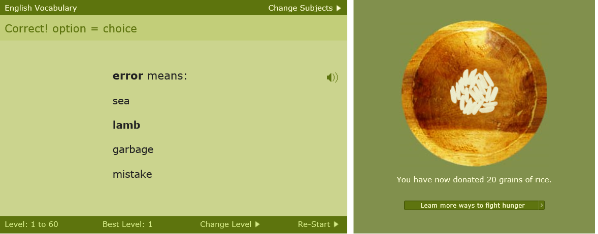
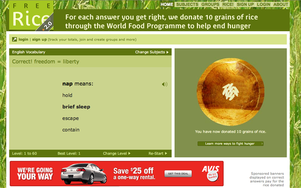
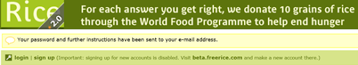
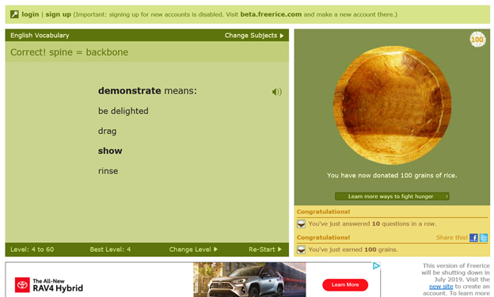

The goal of the redesign project is to improve the user experience of the product. User experience included the usability of the product, but also includes user preferences, emotional responses, fit to task, or anything else that would improve the broad experience of freerice.com. The study was interested in the UX as a whole, even if it was focused on one small subset of the interface or tasks. Situations where redesign fixes one problem but creates new problems for other users or tasks were avoided.
The design approach in the project was evidence-based. Adequate justifications were provided for our decision about what to change and the specific changes we suggest.
After having collected information regarding the system via user interviews, cognitive walkthroughs, etc., the following four redesign targets were selected for the system:
The previously mentioned redesign targets are addressed by combining desired solutions from sketches drawn by project team members, which were driven by user provided suggestions, usability principles, and other UI/UX design principles. The landing page now acts like a proper “game” by providing new users a quick tutorial when first visiting the website showing them where all the information they need to know is at. The navigation layout and overall look of the system has also been changed to better reflect a modern style and by the removal of unnecessary features like a “home”/”Game” button on the main page. The interaction between users and the change levels features has been changed so it is present at all times and has its location shown via the tutorial. Lastly the system now incorporates rewarding feedback, when users answer multiple questions correctly they are provided with auditory feedback (which can be disabled if users please) and visual feedback in the form of a message/alert (which can also be disabled if users please).
No clear direction in interface to change level
The eye tracking of the users
“message/tutorial” to help new users navigate
Difficulty understanding how to use and navigate
User observation
Prompting landing page helping navigate the site
Lack of feedback after sign-up or log-in
cognitive walkthrough
Recognizable sign-in/up with proper feedback
Lack of encouraging feedback
Interviews
Encourages feedback for users